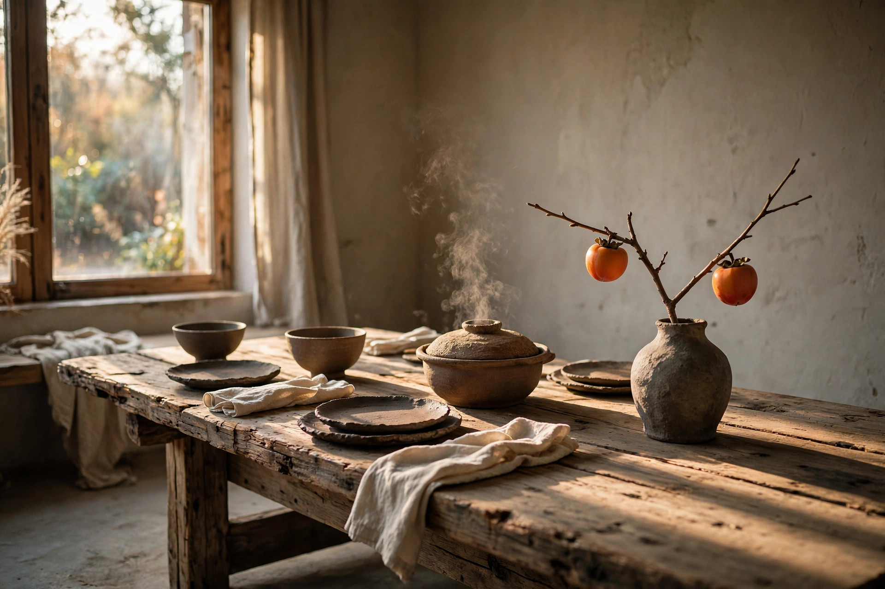

私房菜 · MEMBERS ONLY
乔 乔家大院
拼好饭 · 一桌好饭
乔家大院
院子不大，只摆得下一张长桌。
菜不在多，贵在当季、当天、当心。欢迎回家吃饭。

第 壹 卷
手绘酒水单
柜上有什么，就喝什么。酒是主人自己挑的，茶是当季的。
— 酒 水 单 —
DRINKS · 柜上有什么，就喝什么
酒逢知己千杯少 · 喝好，不喝倒
第 贰 卷
拼好饭
一人带一道菜，拼成一桌饭。每一期由一位主理人定主题和时间，大家照着主题带菜；吃完投票，得票最高的那道菜，封神。
— 本 周 小 黑 板 —
主题还没定
等主理人来写
本期时间 · 等主理人来定
正在连上小黑板…
黑板还空着——今晚谁先来写第一道菜？
同一块黑板，大家看到的都一样。
许 愿 池
想吃的菜，投进池里；谁认领了，谁来做。
池里还空着——想吃什么，先投一个愿。
席本期拼饭
时间待定
主 题《还没定》
还没有人投稿。今晚的菜单，等你来写第一道。
擦擦掉这块板
菜单板生成好、发到群里之后，把黑板擦干净——主题、时间和菜品一起清掉，下一期从头再来。
帖我来带一道菜
神厨神榜 · 投票
吃好了，就在小黑板上给心里的那道菜投一票。得票最高的那道，封为本周厨神。
票数就记在小黑板上，投出去的每一票，大家立刻都看得见。
还没有菜上桌。
等帖子到齐，再来分高下。
等帖子到齐，再来分高下。
大 院 基 金
打赏主理人，或者这期不想带菜——凑个份子，都投进这只小猪。
账上还空着——第一笔，你来记。
当前总额 · 美元
$0
Venmo 付款码
Zelle 付款码